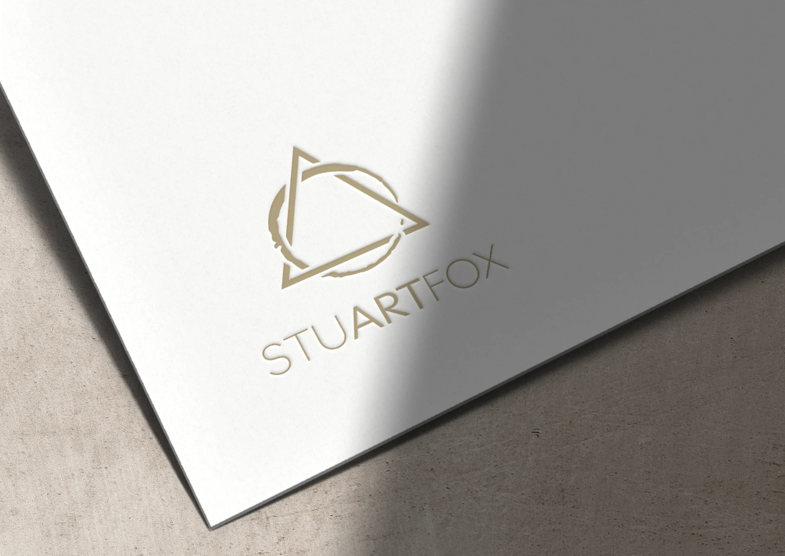
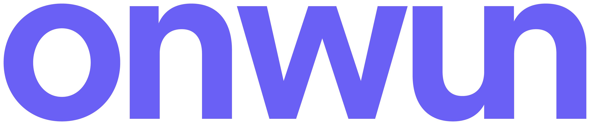
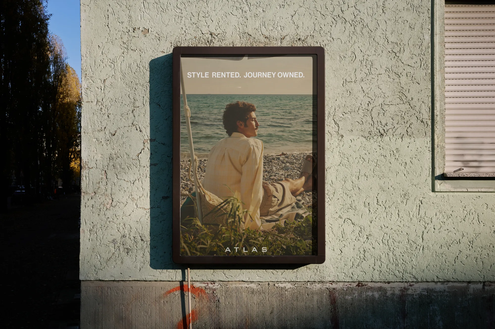
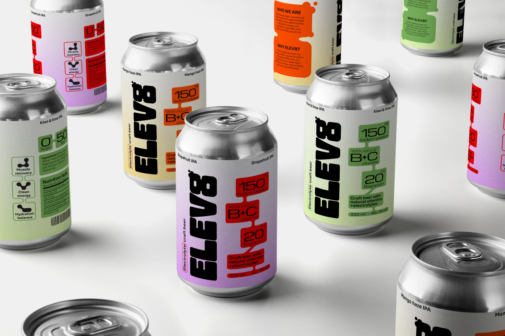
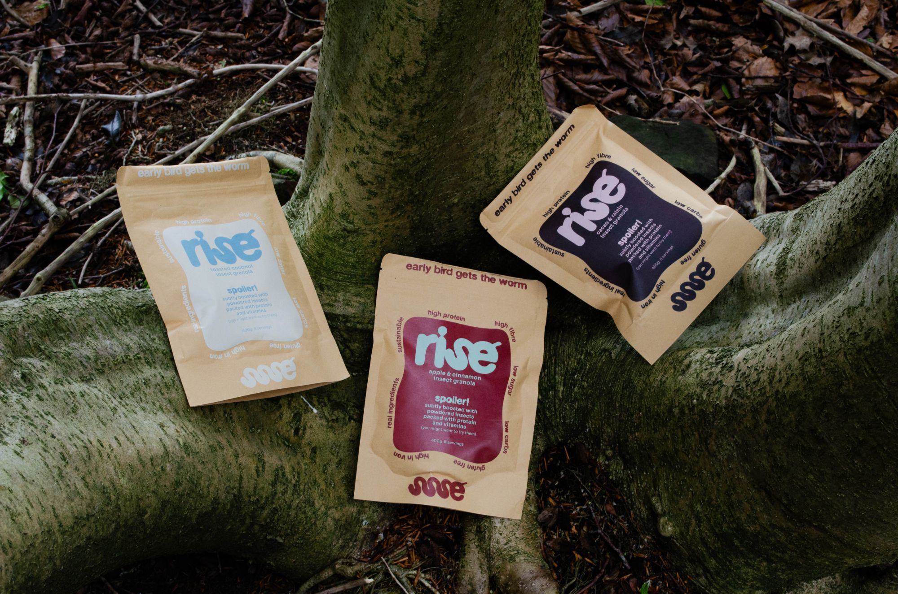

StuartFox is an established interior finish company based in Cheshire. We developed a clean, strategy led rebrand and website reflecting the quality and precision of the work behind the business.

Talk to usPremium, strategy-led brands that get chosen and drive real growth.
Get in touch
StuartFox is an established interior finish company based in Cheshire. We developed a clean, strategy led rebrand and website reflecting the quality and precision of the work behind the business.
Denglish is a friendly, accessible language-learning app designed to help users build stronger everyday German & English. We created a clear, flexible visual system that makes every interaction feel simple, motivating and recognisably Denglish.

ATLAS is a premium menswear rental platform built around travel, culture and Manchester's textile history.

Electrolyte infused craft beer aimed to fight the next day hangovers and sway against the traditional stereotypes of the traditional beer culture.

rise is an insect granola brand designed to make entomophagy feel normal and appealing through a sustainable, high-protein breakfast brand that is familiar, trusted, and easy to enjoy.
Brands are increasingly beginning to look and sound the same. Fast, AI-generated content has made it easy to produce work quickly, but much of it lacks character, clarity, and a point of view. The result is branding that feels polished on the surface but forgettable in practice, generic visuals, vague messaging, and no real reason for people to choose one business over another.
Your competitors are blending in. We make sure you don’t. Observe, Narrate, Wake, Unveil, Nurture: five steps that take you from first insight to launch in five weeks.
We start by listening. We discover how you want your brand to be perceived and where you want to be positioned. We work face to face with you and your team to uncover pain points, your audience and what genuinely sets you apart from other brands out there.
We shape what we learn into your strategy. Positioning, purpose and personality come together in one clear narrative that the whole brand can stand on and your team can rally behind.
We build the visual system and bring your strategy to life. Logos, type, colour and strategy led visual concepts that wake your market up and make your audience look twice.
We reveal the finished identity, launching your brand into the real world refined and delivered together as one consistent brand system.
The journey doesn't have to end here. We stay by your side for 30 days post launch, and offer our valuable expertise in ongoing retainer support to keep you and your brand ahead upon request, at any time. Relationships are what we value most.
Every project is quoted to its scope. As a guide, a visual refresh starts at around £3k, a full brand identity runs from £5k to £6.5k, and websites start at £2.5k. If you need something specific, we’ll put together a custom quote.
Yes. We design and build websites, either around the brand you already have or as part of a new identity we create with you.
Yes, by design. Niall and Ro lead every project from the first call to launch. You’ll have a shared client portal for messages, files and meetings, so everything stays in one place.
Both. We help new businesses launch with a brand that looks established from day one, and help established ones that have outgrown how they look.
Just a conversation. Tell us about your business and where you want it to go, and we’ll arrange a short call. If we’re the right fit, we’ll send a proposal with a clear timeline and price.
We stay with you for 30 days after launch to make sure everything lands well. After that, we offer ongoing retainer support for campaigns, content and new touchpoints whenever you need it.
We look forward to working with you. Start a project or book a discovery call and we can get started straight away.